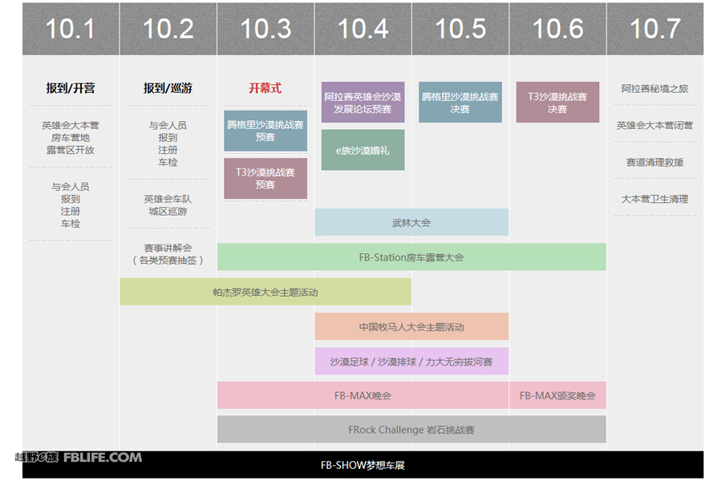

2014阿拉善英雄会 总日程安排表
2014-09-19来源：越野ｅ族编辑：孟庆博

| 9月30日 | 英雄会大本营开营 |
| 10月1-2日 | 与会人员集结、报到 |
| 10月2日 | 英雄会环城大巡游 |
| 赛手及领队会议（晚间） | |
| 10月3日 | 2014 阿拉善英雄会开幕式 |
| 首届腾格里沙漠挑战赛 预赛 | |
| 第九届T3沙漠挑战赛 预赛 | |
| FB-Max 乌兰牧骑歌舞晚会 | |
| 10月4日 | 阿拉善沙漠发展论坛 |
| e族沙漠婚礼 | |
| 武林大会 | |
| 帕杰罗英雄大会主题活动 | |
| 中国牧马人大会主题活动 | |
| 沙漠足球争霸赛／沙漠排球对抗赛／力大无穷拔河赛 | |
| 赛手及领队会议 | |
| FB-Max 会员晚会 | |
| 10月5日 | 首届腾格里沙漠挑战赛决赛 |
| 武林大会 | |
| 沙漠足球争霸赛／沙漠排球对抗赛／力大无穷拔河赛 | |
| 赛手及领队会议 | |
| FB-Max 慈善晚会 | |
| 10月6日 | T3沙漠挑战赛决赛 |
| FB-Max 颁奖／电音晚会 | |
| 10月7日 | 阿拉善左旗－右旗秘境穿越之旅 |
| 英雄会大本营闭营 |
Copyright © 2014 FBLIFE.All Rights Reserved.